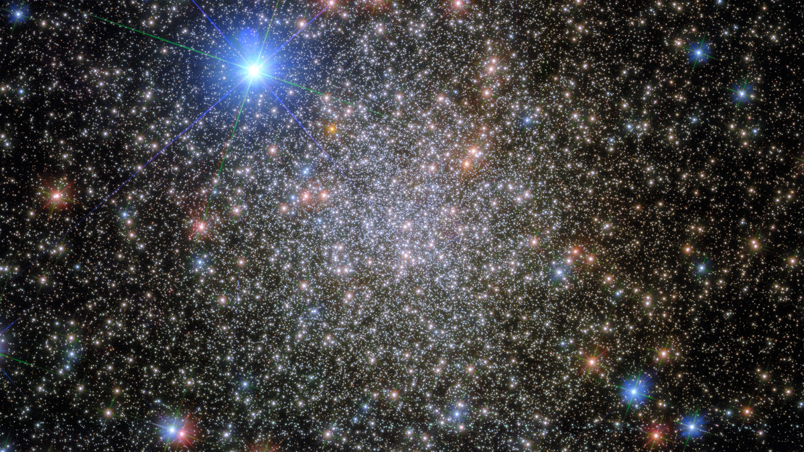
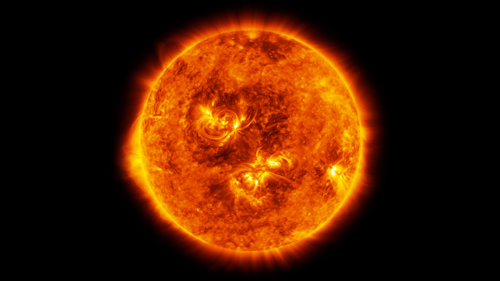
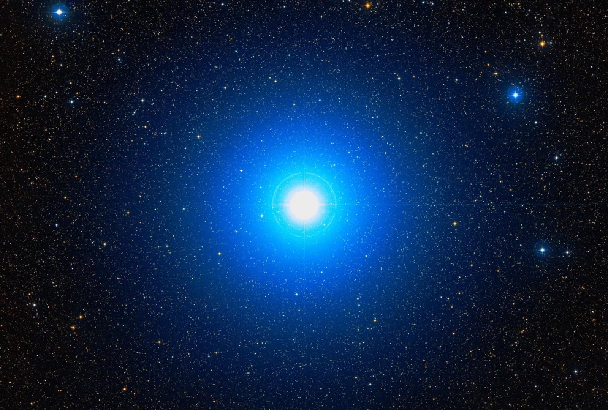
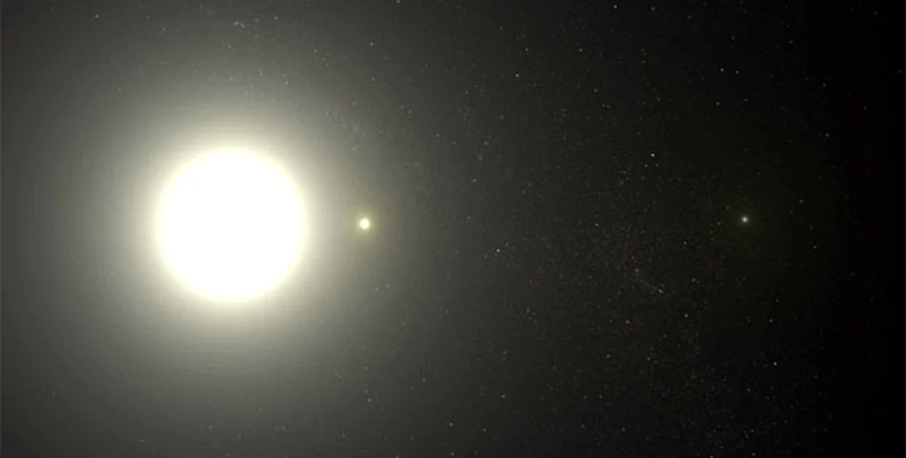
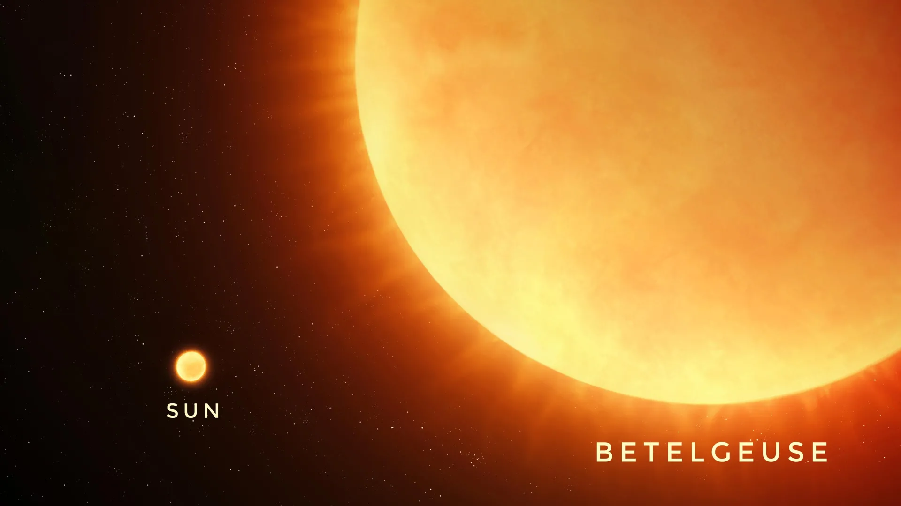
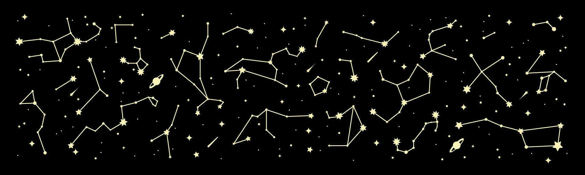

Stars

What is a Star?
A star is a massive sphere of plasma held together by its own gravity, emitting intense heat and light. At the core of a star, a process called Nuclear Fusion occurs, which produces vast amounts of energy, providing the light and heat we observe.
Notable Stars and Their Significance
While there are billions of stars in the universe, several are particularly significant to us due to their proximity or unique characteristics:
- The Sun: The closest star to Earth. It is a medium-sized Yellow Dwarf star.

- Proxima Centauri: The closest star to our solar system (excluding the Sun). It is a Red Dwarf located approximately 4.24 light-years away.

- Sirius: Known as the "Dog Star," it is the brightest star visible in the night sky.

- Polaris (The North Star): A stable star used by navigators for centuries to identify the North direction in the Northern Hemisphere.

The Life Cycle of a Star
Stars undergo several stages from birth to death:
- Nebula: Stars are born within massive clouds of dust and gas in space.

- Main Sequence: The stable phase where a star spends most of its life (e.g., our Sun is currently in this stage).
- Final Stages: Depending on its mass, a star may expand into a Red Giant or a Red Supergiant (like Betelgeuse) before ending its life as a White Dwarf, Neutron Star, or a Black Hole.

Color, Temperature, and Size Comparison
The color of a star indicates its surface temperature. Generally, blue stars are the hottest, while red stars are relatively cooler.
| Star Name |
Color |
Temperature |
Size (Relative to Sun) |
| Proxima Centauri |
Red |
Low (approx. 3,500°C) |
Very Small |
| The Sun |
Yellow |
Medium (approx. 5,500°C) |
Medium |
| Rigel |
Blue |
Very High (10,000°C+) |
Large |
| Betelgeuse |
Red |
Low |
Massive (Supergiant) |
Constellations
Humans have grouped stars into patterns called constellations for navigation and storytelling:

- Orion (The Hunter): Features prominent stars like Betelgeuse and Rigel.
- Scorpius (The Scorpion): Contains the bright red star Antares.
If you found this information helpful, please use the link below to visit our YouTube channel. Subscribe and support us to help us continue creating more content like this.
- Infinity Thinkers Laboratory